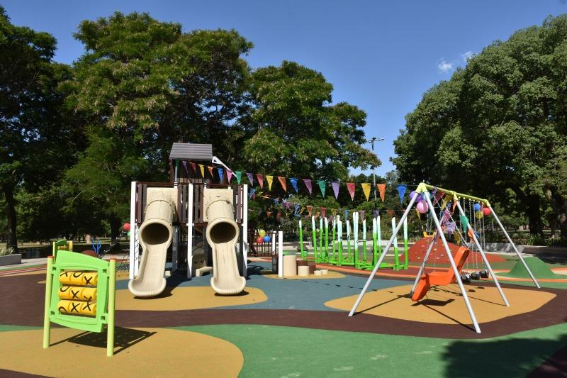

Barrio Parque Avellaneda
Es un barrio muy tranquilo. Se pueden ver algunas edificaciones de principios de siglo. Tiene muchos espacios verdes y plazoletas. Algunas de sus calles son anchas, arboladas, con poco tránsito y silenciosas. El Parque "Presidente Dr. Nicolás Avellaneda" se encuentra en casi toda su extensión en lo que fue la antigua chacra “Los Remedios”, que perteneció a la familia de don Domingo Olivera.
Parque Avellaneda
Ubicado en la calle Av. Directorio y Av. Lacarra, es un Parque grande que contiene 1 zona de juego infantil.
En esta plaza se permiten perros y es accesible para personas que se encuentran en sillas de ruedas, también tiene mesas de picnic, área para patinetas, cancha de Básquetbol y ruta para senderismo.
Horario: Este Parque está abierto las 24 Hs.
Qué conocer cerca del Parque: Cerca de este Parque está el Polideportivo Nicolás Avellaneda, varias escuelas, plazas y sitios para comer.
Ayuda cercana: Atención, si necesitas ir a un Hospital, el más cercano a este Parque es el Hospital San Cayetano y si necesitas ir a una comisaría, la más cercana es la Comisaría Vecinal 9-C. En el mapa te dejamos su ubicación.
En el siguiente mapa podrás ver la ubicación del Parque y si quieres ver tu ubicación para saber si estás cerca del Parque, por favor dale a Permitir para que el mapa te muestre tu ubicación:


Plazoleta Latinoamericana
Ubicado en El Profeta de la Pampa y la Av. San Juán Bautista de la Salle, es un Parque que tiene zona de juego infantil en forma de camión de Bomberos.
En esta plaza se permiten perros y es accesible para personas que se encuentran en sillas de ruedas, también tiene área para patinetas.
Horario: No tiene horario definido.
Cabe destacar de que a pesar de que es un parque renovado hace poco más de 1 año, sus instalaciones están ya algo deterioradas y el alrededor no es muy limpio, es la queja que da el público que la visita, además de no tener un horario fijo para abrir.
Qué conocer cerca del Parque: Cerca de este Parque se encuentran varias plazas y cancha de Fútbol.
Ayuda cercana: Atención, si necesitas ir a un Hospital, el más cercano a este Parque es el Hospital San Cayetano y si necesitas ir a una comisaría, la más cercana es la Policia De La Ciudad Buenos Aires Ciudad. En el mapa te dejamos su ubicación.
En el siguiente mapa podrás ver la ubicación del Parque y si quieres ver tu ubicación para saber si estás cerca del Parque, por favor dale a Permitir para que el mapa te muestre tu ubicación: